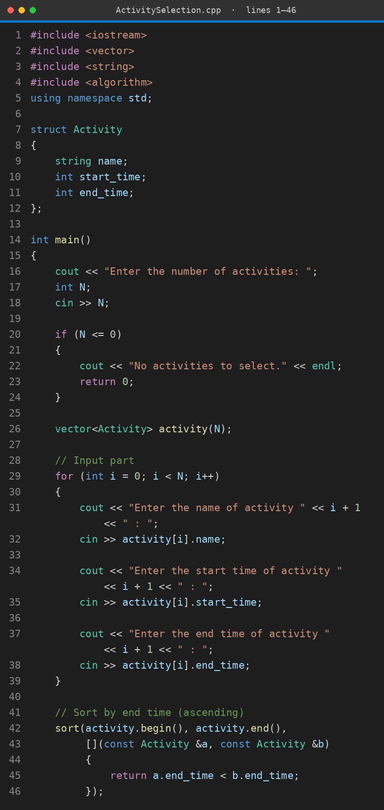
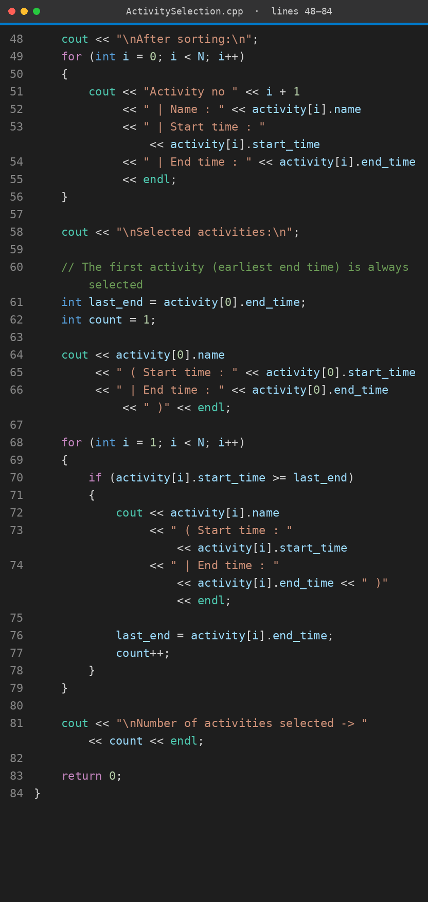

We have a list of activities, each with a start time and an end time. One person can do only one activity at a time, so the chosen activities must not overlap. We want to select the maximum number of activities. The greedy choice: always pick the activity that finishes first, so the most time is left for the others.
Time O(n log n) (sorting) · Space O(n)
